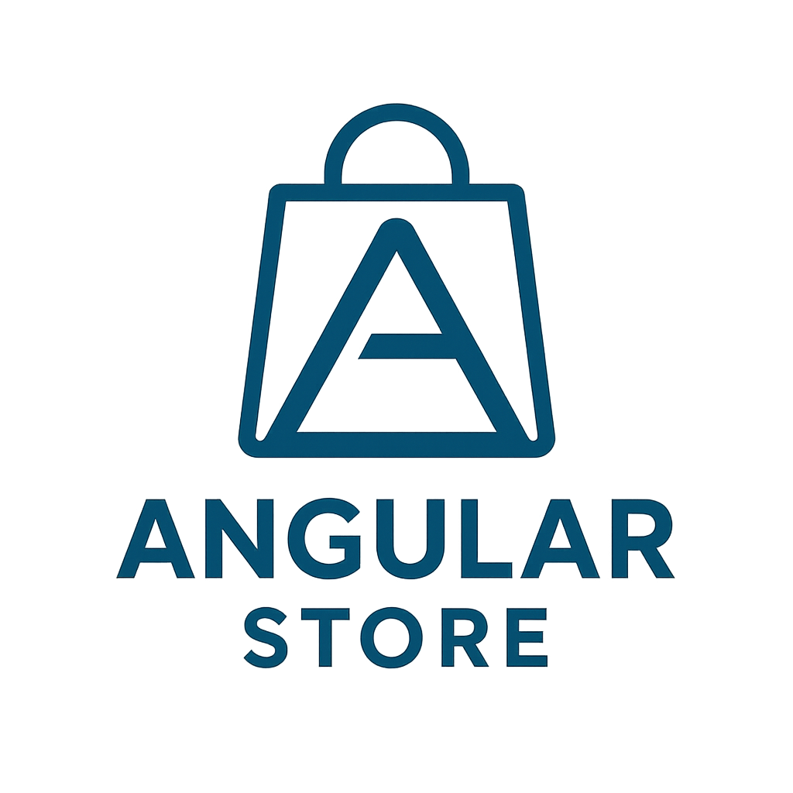

<div class="tooltip-container">
    <a routerLink="/">
    
    </a>

    <div class="button-browser">
        <button mat-button routerLink="/login">Login</button>
    </div>

    <div class="button-mobile">
        <button mat-button [matMenuTriggerFor]="menu">☰</button>
        <mat-menu #menu="matMenu">
            <button mat-menu-item routerLink="/login">Login</button>
        </mat-menu>
    </div>
</div>